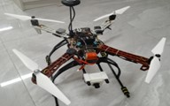
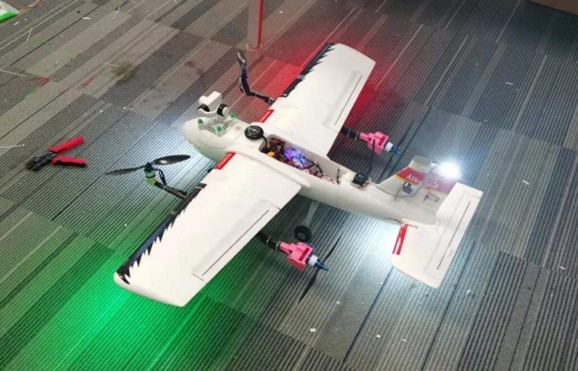
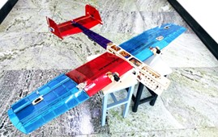
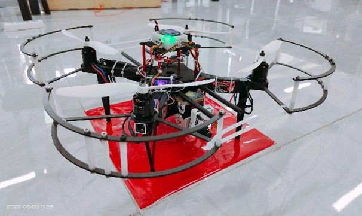
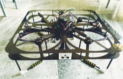
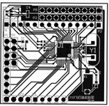

719飞行器实验室介绍

实验室简介
719飞行器实验室是由老师指导，学生自主管理的科技创新型实验室。实验室以设计和制作航空飞行器为主，同时参加比赛，承接校内外项目。重点围绕固定翼航模飞机，多旋翼飞行器的制作，飞行控制系统，飞行器自主避障等展开实验室运作，取得不错成绩。实验室设有会议室，工作台，展台等，拥有3D打印机，激光切割机等仪器设备。自2014年创办以来，实验室普及航空知识，发展航模活动，寻求技术突破与创新，培养出一批优秀人才。实验室还与深圳市科比特航空科技有限公司等企业保持合作关系，并与企业合作定期开展校外科创教育。
获奖情况
第十八届全国机器人锦标赛混合控制型飞行赛 一等奖 第十八届全国机器人锦标赛自主型避障飞行赛 一等奖 第四届山东省大学生电子与信息技术应用大赛 一等奖 2016年威海大学生电子设计联赛 二等奖 2017年代表学校参加科研类全国航空航天模型锦标赛地 侦察项目分站赛 2018年9月底代表学校参加科研类全国航空航天模型锦标 赛垂直起降项目国赛 2018年10月27日赴烟台参加海军工程大学举办的联谊活动 2018年12月1号成功举办校内首届飞行器设计大赛 2019年1月赴江苏参加复合式航测无人机的飞行培训。 2021年全国大学生电子设计竞赛山东省一等奖 2021年全国大学生电子设计竞赛山东省二等奖 2021年全国大学生工程训练综合能力竞赛山东省三等奖 2021年全国大学生集成电路创新创业大赛华北赛区三等奖 2021年哈工大威海挑战杯校一等奖
成果展示
开源飞控使用及二次开发
719飞行器实验室对APM、Pixhawk等常见开源飞控进行了比较系统深入的研究，并在此基础上进行二次开发，实现了诸如全向无人机避障系统、复合式垂直起降无人机、垂直起降载运飞行器、对地侦察与打击固定翼飞行器、共轴双桨飞行器、无人机机械臂抓取系统等项目的研发工作。
基于PIX开源飞控平台的无人机避障系统
{kind=link}
四旋翼全倾转垂直起降无人机
{kind=link}
CADC垂直起降载运飞行器

对地侦察与打击固定翼飞行器
{kind=link}
共轴双桨飞行器

无人机机械臂抓取系统

飞行控制系统的研制及应用
719飞行器实验室在自行研发飞行控制系统的过程中，对姿态解算算法、PID及ADRC控制器的设计、IMU数据滤波器设计等理论进行了深度学习研究，并在实验室自研飞行控制系统的基础之上，实现了定点降落、巡线飞行、绕杆飞行、避障飞行、自主路径规划等功能。
基于多传感器融合的定点降落飞行器
{kind=link}
基于毫米波雷达的全向避障无人机
{kind=link}
自研飞行控制系统软硬件
{kind=link}